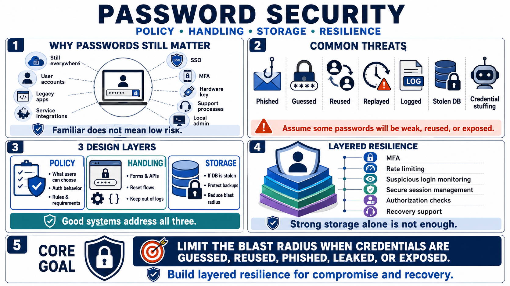

Why Password Security Still Matters
Connecting to LMS... Progress: in progress

Narration
Passwords remain one of the most common authentication factors in real systems. Even organizations with single sign-on, multi-factor authentication, hardware keys, and workload identity still encounter passwords in user accounts, fallback flows, service integrations, local admin accounts, legacy applications, and support processes. Because passwords are familiar, teams can underestimate how much design discipline they require.
The main threat is not one single failure mode. Credentials can be phished, guessed, reused, replayed from another breach, exposed in logs, stolen from a database, or sprayed through automated credential stuffing. Developers should design systems with the assumption that some credentials will eventually be weak, reused, entered into the wrong site, or exposed through a compromise outside their control.
Password policy, password handling, and credential storage are related but different. Policy defines what users may choose and how authentication should behave. Handling covers how passwords move through forms, APIs, reset flows, logs, and memory during normal operation. Storage determines what remains if a database or backup is stolen. Good systems address all three instead of treating password security as a single checkbox.
Password security is part of a larger identity and access control system. Strong storage reduces damage after compromise, but it does not replace MFA, rate limiting, suspicious login monitoring, secure session management, or authorization checks. The goal is layered resilience: when credentials are guessed, reused, phished, leaked, or exposed, the system should limit the blast radius and support recovery.